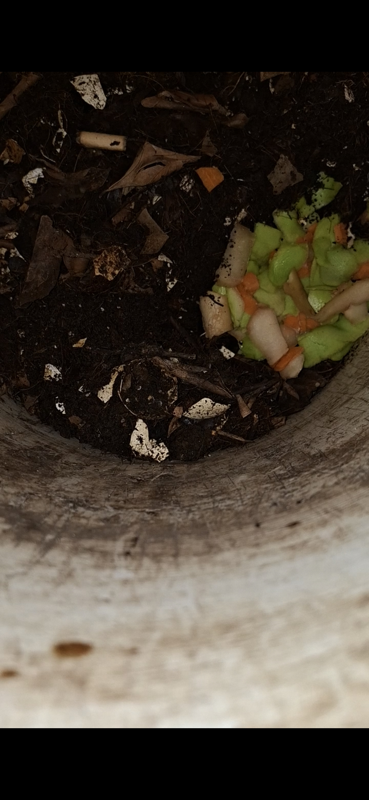
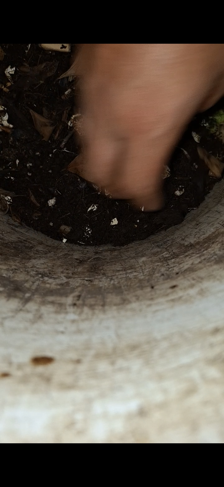

// FERTILIDAD URBANA AL LÍMITE //
Biocaos nace de una idea simple: la naturaleza no necesita de grandes espacios, solo necesita el ciclo correcto. Empecé este proyecto para demostrar que, incluso en un departamento, podemos transformar nuestros desechos en vida. No es solo composta, es recuperar nuestra autonomía frente a lo que consumimos.

Cada resto de fruta o verdura que tiras es un recurso desperdiciado. Al practicar el vermicompostaje, convertimos basura en el fertilizante más potente que existe: el humus de lombriz.
El compostaje no requiere un patio enorme. Con un espacio reducido y el manejo adecuado de tus lombrices, puedes tener tu propia fábrica de nutrientes para tus plantas en casa. ¡El autocultivo empieza en tu cocina!
